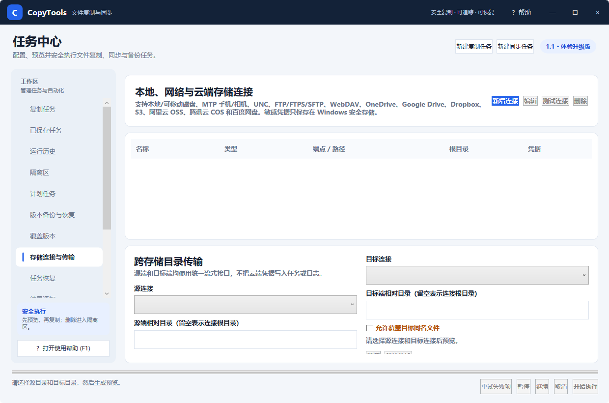

图 5：统一管理连接，并在两个存储端之间生成预览和执行传输
CopyTools 可管理本地或可移动磁盘、MTP 手机/相机、UNC 共享、FTP/FTPS/SFTP、WebDAV、OneDrive、Google Drive、Dropbox、S3 兼容存储、阿里云 OSS、腾讯云 COS 和百度网盘连接。
| 问题 | 检查重点 |
|---|---|
| 连接测试失败 | 端点协议和端口、代理、系统时间、证书、账号权限、令牌有效期。 |
| 能列目录但不能上传 | 远端写入权限、配额、对象键或 WebDAV 根路径。 |
| 大文件中断 | 网络稳定性、服务端单文件限制、分片上传能力和重试设置。 |
| 文件名异常 | 远端是否限制 Windows 保留字符、末尾空格、超长路径或大小写。 |